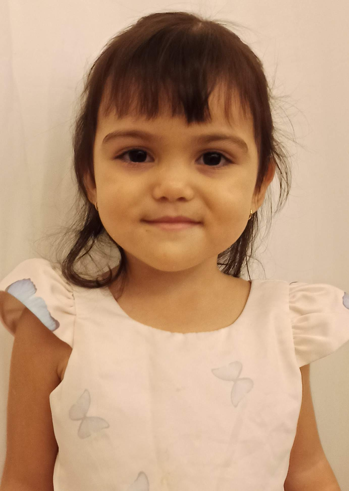

Antonella Sakiama Cortez
Antonella Sakiama Cortes hoje tem 03 aninhos e é a maior riqueza dessa família. Uma menina que sabe de tudo, esperta, inteligente, o maior orgulho de seus pais. É dela que vem a maior inspiração do seu pai para não se envergonhar em se levantar e estudar, correr atrás de um futuro melhor para ela e sua esposa. Seus pais te amam demais!!!
Voltar